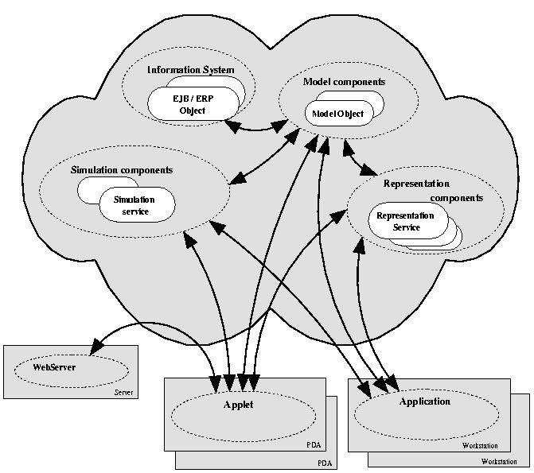
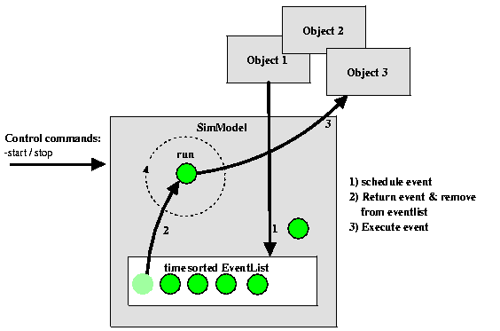
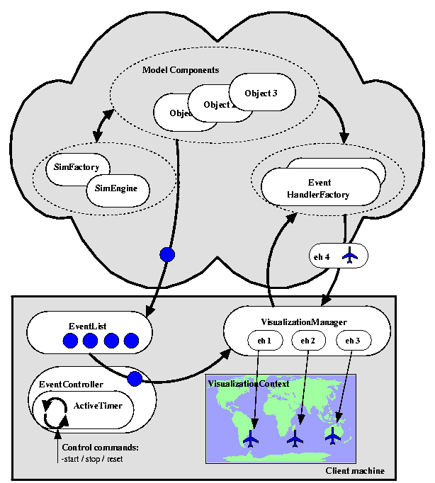

Peter H.M. Jacobs
Niels A. Lang
Alexander Verbraeck
Delft University of
Technology
Faculty of Technology, Policy and Management
Systems Engineering Group
Jaffalaan 5, 2628 BX, Delft, THE NETHERLANDS
Discrete event simulation is used for dynamically modeling complex systems in order to analyze and understand these systems, and in order to (re)design and engineer these systems (Shannon 1975, Banks 1998). Statistical information is gathered and presented during and after the simulation run for providing insight into the most important performance indicators. In most cases, animation and visualization are added to provide insight and understanding into the system modeled during the run. Currently we see a lot of interest in object-oriented simulation environments, where real-world objects can be captured in the simulation environment as object representations. Many of the simulation applications in logistics, business process engineering, and information systems modeling deal with distributed systems with distributed information sources. Therefore, it seems logical to strive for a simulation environment that truly captures the distribution, and that does not reduce the effects of the distributed nature to an artificial time delay. Most current discrete event simulation packages are, however, not designed to cooperate in a distributed computing environment. There are several reasons why it would be interesting to have a simulation environment that has a truly distributed nature.
Simulation models of business processes may need to interact in complex ways with real-time information system components (Fishwick 1995). It might for example save a simulation model builder a lot of time to reuse an existing pricing component of a business system in a simulation component. However, in order to do so, the simulation and business system components should interact using a common communication protocol. Although such protocols (for inter-business component communication) have not yet matured, a simulation architecture can at least be expected to be extendible with such interaction mechanisms. This implies for example separating the core simulation service from the model components that use it. In this way the simulation will become a central service in a distributed, dynamic network where the exact capabilities and identity of the acting and reacting realtime components remains hidden for the simulation core. In the most extreme peer to peer case, objects will use the simulation service just as another way of scheduling their interactions.
Another issue is the lack of separation between visualization and simulation in current simulation environments. First, the place where the simulation can best be run (e.g. on a fast server) is not always the place where we want to view the simulation (e.g. in a Web browser at a client's location). Second, due to the global and complex nature of current business systems or logistical systems, the number of stakeholders involved in these systems is large. Moreover, these stakeholders do not reside in one location, but are spread all over the world. In order to provide them with a customized view on a simulation representing their business, there is a need to decouple visualization from the simulation and to deliver this visualization in an interactive way to distributed clients (e.g. a web browser or pda). When several stakeholders are in this way concurrently interacting with the simulation, distributed simulation can become distributed gaming.
A final argument for a distributed simulation architecture is rooted in the need to specify simulations of complex business systems. Gathering data from systems and databases, and carrying out measurements for the specification by hand is a costly procedure. However, most data needed for simulation studies is available in some automated form, such as in datawarehouses, in ERP databases, or in legacy systems. Since these systems probably contain the most consistent, accurate and actual information of the business system, it seems logical to use that information to specify a simulation. This implies the need to enable a simulation to interact with (distributed) information systems, perhaps even during the run of the simulation. In this way generators, statistical objects and even some of the transactional events could be automatically instantiated and initialized from underlying data sources.

Figure 1:
Architecture
This section has clearly stated the need for a distributed architecture on which discrete event simulations are built. As indicated, current implementations of discrete event simulation software are not sufficiently capable to support this distributed cooperation. The next section will present some background on existing object-oriented simulation packages. Section 3 will point out the approach that we have taken to develop a new distributed simulation and representation architecture called DSOL, which stands for Distributed Simulation Object Library. In this section screenshots of a distributed supplychain example are included. The final section presents the conclusions and gives some pointers for further research.
Semi-distributed simulation environments share a web-based characteristic. These packages can be divided in simulation models that are executed on the client (Page et al. 1997) and simulation models that are executed on the server and present their output to the client.
Examples of the first category of semi-distributed environments are most Java-based simulation environments like Silk, JavaSim, SimJava and DESMO-J (Garrido 2001). An example of the second category is the simulation package that can present its results during and after the run in html-format to distant viewers on the web.
Fully-distributed simulation environments consist of distributed simulation and visualization services. They provide integration with distributed information systems and endless variations in configuration. Figure 1 is an illustration of this architecture.
Since the Java programming language has strong support for distributed interconnectivity, it is reasonable to assume that current Java-based simulation languages characterized as semi-distributed can easily be used to deploy fully-distributed simulation models.
The next two sections will show though that current Java-based simulations are either based on a worldview that conflicts with the level of distribution that is sought in this research or share design patterns that focus on the easiness of model construction but conflict with a distributed deployment.
Another worldview adopted by some discrete event languages is DES and its accompanying Future Event List on which object interaction is scheduled. Two of the core notions most Object-Oriented implementations of this worldview share are:
Objects involved in the simulation environment do not interact with each other by a direct method invocation, but schedule them by a constructing a simulation event. Such an event encompasses the execution time, a (remote) pointer to the object on which the method is intended to be invoked, the method itself and the arguments for the method to be invoked. This mechanism is referred to as scheduling method invocation.
Running a simulation model merely implies executing the time-sorted simulation events. The absolute simulation time therefore becomes the execution time of the last executed simulation event. Figure 2 illustrates this worldview by focusing on the way simulation events are stored (1) in the eventlist, ordered on time, retrieved (2) and finally executed (3) on the objects referred to in the simulation event. Examples of these simulation languages include Simkit (Buss 2001).
The advantages of a DES implementation are its single threaded approach, its increased flexibility (Buss 2001), and the lack of requirements on objects involved in the simulation.
The architecture presented in this paper and illustrated in Figure 1 focuses on two remote network services. The first service is a DES-based remote simulation service which is described in subsection DISCRETE EVENT SIMULATION IMPLEMENTED AS A REMOTE NETWORK SERVICE The second service is a system representation service described in subsection SYSTEM REPRESENTATION IMPLEMENTED AS A REMOTE NETWORK SERVICE
Before focusing on the internal structures of these services, a notion must be made on the increased complexity of autonomous components in runtime. The basic question regarding this complexity is "How are distributed clients, components, data sources, simulation services, etc. able to find each other in order to interact?".
The implementation presented in this paper made a first step in solving this issue by defining a asynchronous topic-subscription and lookup mechanism. The first step occurs when objects involved in the architecture present their characteristics and capabilities to lookup services.
The second step occurs when objects interested in others define their interest by creating a topic object and presenting this inquiry to a lookup service. Based on this topic object, lookup services are able to return all objects matching the characteristics described in the topic. More information on how objects initially find these lookup services can be found in (Sing 2000).
As stated the disadvantage of DES-based simulation languages is the increased complexity in model construction. Most other implementations ease this complexity by one or more pragmatic design patterns. Most of these patterns conflict though with a truly distributed architecture.
Examples of these patterns are a static eventlist, relative time scheduling, non-serializable reflection classes, the lack of overloading primitive attributes, and the requirement to extend from an abstract simCoreObject which prevents interchange of simObjects and non-simulated components.
Concluding one can state that the simulation service is merely a remote service on which all objects are able to schedule their interaction. There are no requirements to objects either scheduling or being scheduled. Helper classes are available to facilitate overloaded methods with primitive and wrapped arguments.
The representation of a (modelled) system should be made available for multiple stakeholders, that interact concurrently with that system from a variety of possibly remote locations.
However, some additional observations specific for system representation can be made.
A first observation is that a stakeholder interacting with a system (model) is usually not interested in all the aspects of the system. This is especially true when large-scale, complex systems are considered. This implies a need to 'browse' the system (Spence 2001).
Secondly, a user may interact with a model in several modes. We characterize the interaction as passive, if the user does not interact with the model during a run. In this mode the user is still able to dynamically define his area of interest (e.g. to 'browse' the system representation). However, these actions will not change the outcomes of the simulation run. The interaction is characterized as active, if the user is able to interact with the model during a run. The user's actions will then influence the actual outcomes of the simulation run. The distinction between passive and active model interaction has consequences for the relation between representation and simulation. With passive interaction, the representation data only needs to be generated once by a simulation run. After that, many users could concurrently iterate over the generated representation data. Given the composition of the user group and the ICT resources available, the representation data could be distributed among the users in several ways, given criteria like response time and effective and efficient resource usage. With active interaction, in which user interaction causes different simulation outputs, there is a tight link between the simulation execution and the representation presented to the user. This link becomes even more tight, when multiple users are interacting with the model concurrently. Ideally, the representation subsystem should be able to support both modes of interaction.
Thirdly, system representation as such does not require to be based on a simulation only. Instead, by separating the system representation from the simulation components, various combinations between real systems (e.g. information system) and simulated systems become possible. The representation presented to the user may be generated in each of them.
Finally, the remote aspect of system representation poses some challenges of its own. The devices and networks used by the various users may be as diverse as the users themselves. They may range from smart mobile phones up to powerful graphical workstations and use high speed LANs or low speed modems. As a consequence, a user might need to adapt the nature of the system representation to the actual communication and information processing capabilities available. Such adaptions are possible, since state change data can be represented in various ways. Information on the movement of a transport vehicle might for example be represented by a text message, but could also be represented in a 3D virtual world. Obviously, these representation modes pose different requirements on the communication and information processing resources available. It follows that the (modeled) system should somehow make these different kinds of representation available.
The system representation service has been developed with these notions in mind. A first proof-of-concept implementation has already been implemented. This implementation enabled various stakeholder to represent and simulate an actual, real-time supply chain. A screenshot is shown in Figure 4. In the remainder of the section, the representation service and the accompanying representation process will be described.
Figure 1 already introduced the relationship between model,simulation and representation components. Several of these components have a role in the system representation process:The arrows in Figure 1 also show some interactions that take place between the various groups of components. This interactions are described in more detail in Figure
The left side of Figure 1 illustrates the representation update process. Model components broadcast events to interested clients, that place received events in a local visualization event-list. Conceptually, the state update event-list does not need to reside client-side. Several clients could share one server-side event list. It may be noted that this event list contains state update events, in contrast with the simulation event list, that contains events triggering an action. Since they both contain time-ordered events they are similar components. The client-side dynamic representation process is then controlled by an EventController component, that iterates through the event-list usually in a time-ordered manner. Such a controller object may itself be controlled by some kind of timer, that updates the representation time of the system. By changing the properties of this timer, the user is able to control the speed and period of the system representation.
The process described thus far provides a mechanism to process a state-update event on the correct representation time. However, since these events basically only contain the state-change information itself, additional components are needed to transform this information in an actual, dynamic representation. This is illustrated on the right side of Figure 5, by the interaction between the client-side visualization manager and the representation components in the network. Initially, the client has no event handlers available. When an event needs to be processed for which no event handler is yet available, the client tries to retrieve this event handler from the representation components, based on:
The event handler may consist of a controlling part and a representation part. The representation part shown in Figure 5 is a graphical representation of an airplane, that will be added to the client's visual representation context. The controlling part of the event handler can be an intelligent component: the movement of the airplane representations shown in Figure 5 could be extrapolated by the event handler until the time the next 'move' event arrives for that airplane. This mechanism reduces the amount of events that needs to be communicated to represent dynamic processes. This controlling part may also be enabled to interact with the original model component that created it. In this way active user-system interaction can be implemented.